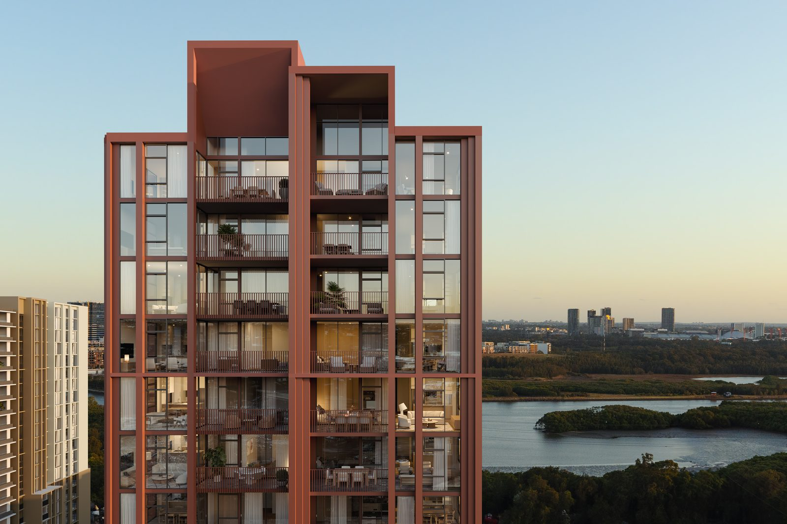
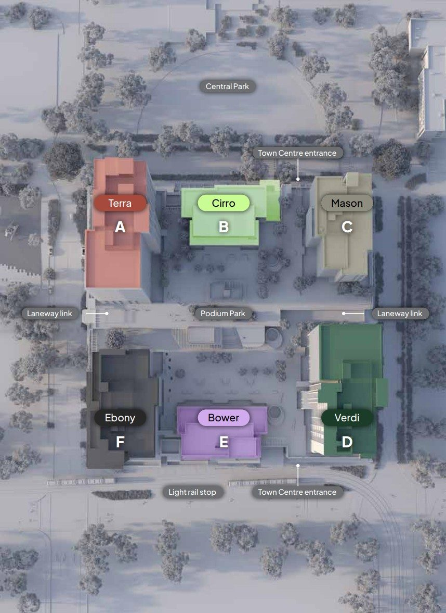
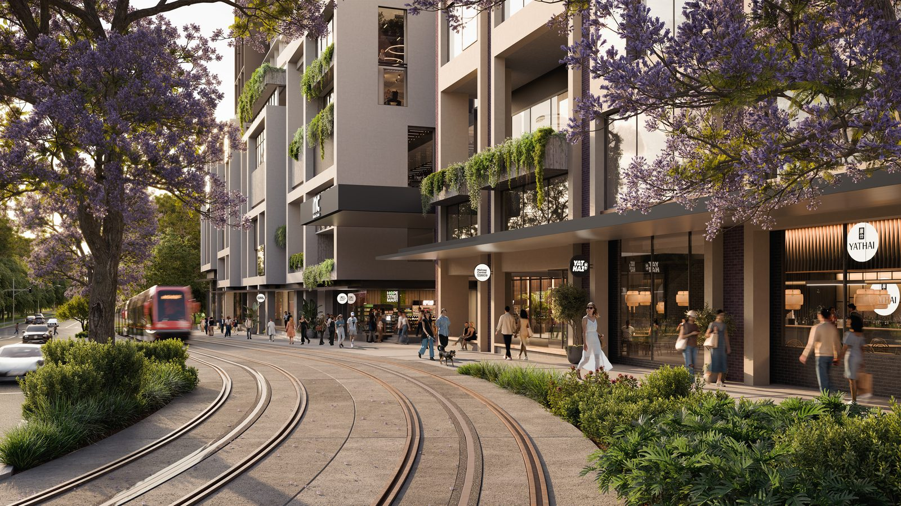
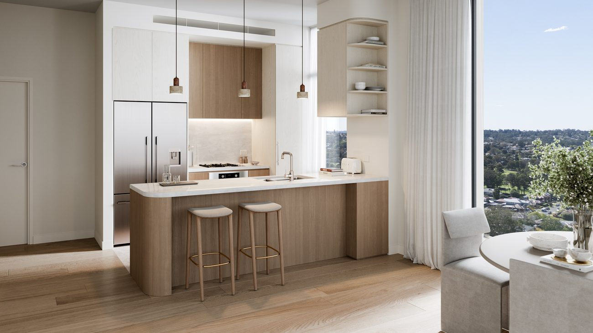
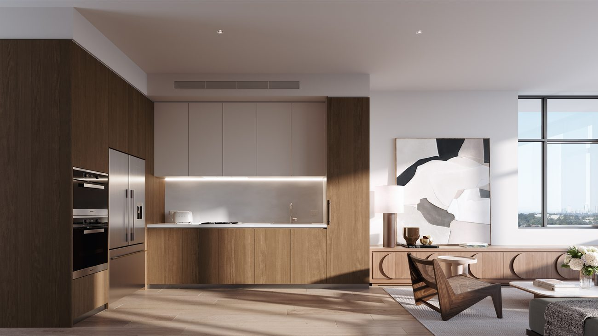
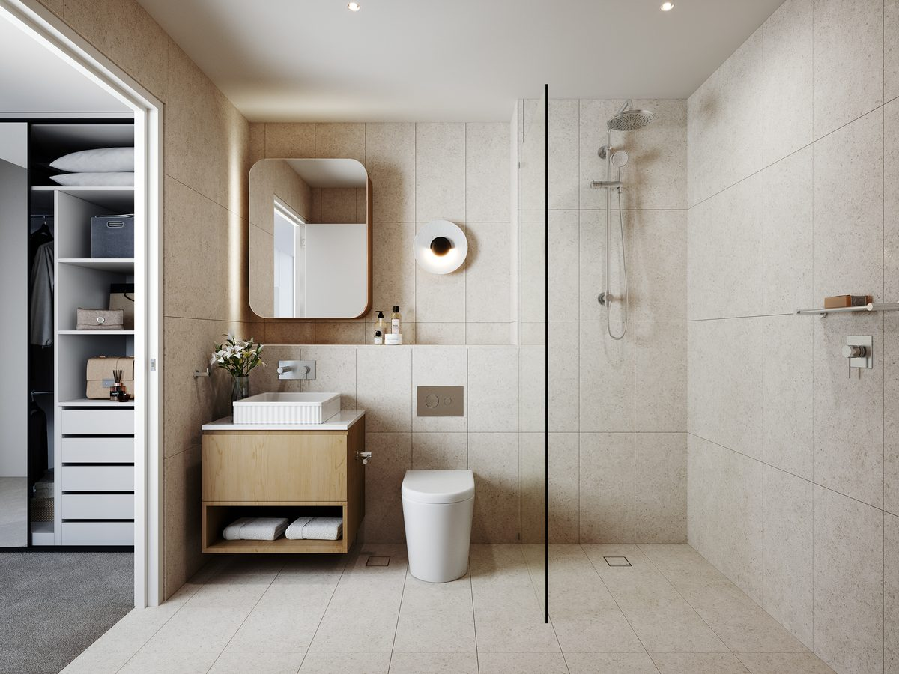
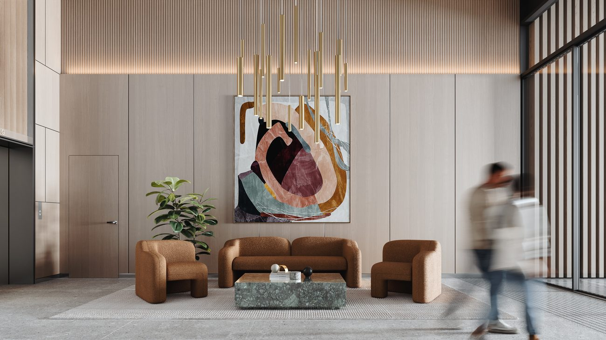
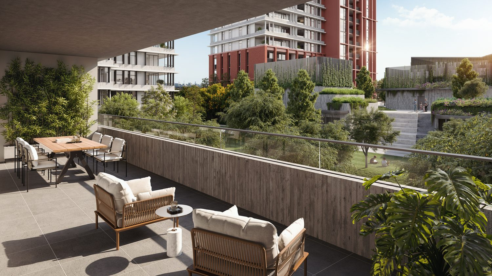
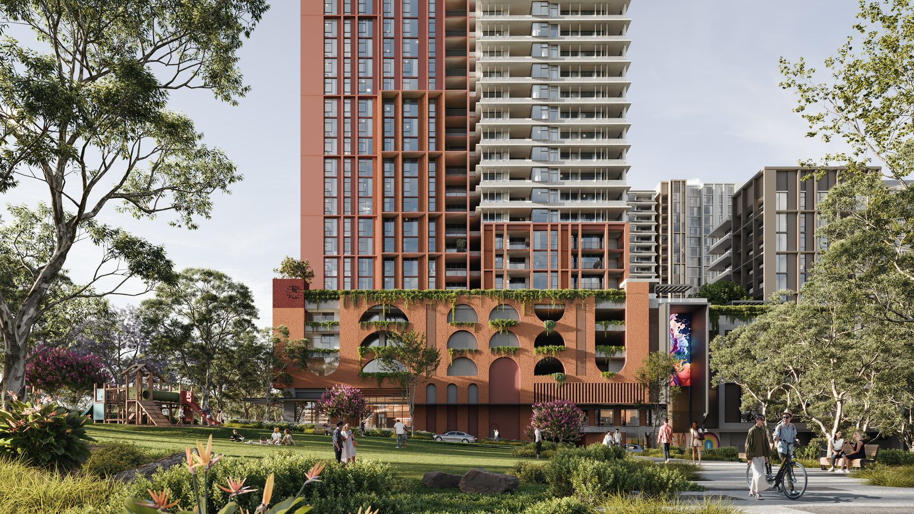

494 residences above Melrose Park's first-ever town centre and the new Parramatta Light Rail line
멜로즈 파크 최초의 타운센터와 새 파라마타 라이트레일 위에 들어서는 494세대

Melrose Central is more than its residences. Taking inspiration from what locals want and need, this masterplanned precinct responds to all the facets of everyday living — from a leafy, walkable streetscape and bustling shopping centre, to the immersive landscape and pet-friendly apartments rising above it all.
멜로즈 센트럴은 단순한 주거 그 이상입니다. 지역 주민이 원하는 것에서 출발한 이 마스터플랜 단지는 일상의 모든 면을 담아냅니다 — 녹음이 우거진 보행 친화적 거리와 활기찬 쇼핑센터부터, 그 위로 솟아오른 반려동물 친화 아파트까지.
Six residential buildings — each with its own character — sit above a 30,000 sqm, four-level retail town centre, joined by a 6,000 sqm residents-only Podium Park. A dedicated Parramatta Light Rail stop arrives at the precinct's Hope Street entrance.
각기 다른 개성을 지닌 6개의 주거 빌딩이 4개 층, 30,000㎡ 규모의 리테일 타운센터 위에 자리하며, 6,000㎡ 입주민 전용 포디움 파크가 이를 잇습니다. 파라마타 라이트레일 전용 정거장이 단지 Hope Street 입구에 들어섭니다.

Parramatta Light Rail Stage 2 · Artist Impression
파라마타 라이트레일 2단계 · 조감도
A clock tower and olive tree mark this corner as a local landmark. North-facing views span new parks and open spaces, with a distinctive terracotta palette countering the sweeping green outlook.
시계탑과 올리브 나무가 지역 랜드마크를 이루는 코너. 북향 조망으로 새 공원과 열린 공간이 펼쳐지며, 독특한 테라코타 색조가 푸른 전망과 대비를 이룹니다.
Sculptured elements complement its neighbours as Cirro floats above Melrose Central's north entrance. Matt white accents integrate with lush planting, reflecting its park view and closeness to Podium Park.
조각적인 요소가 이웃 건물과 조화를 이루며, 단지 북쪽 입구 위로 떠오르듯 자리합니다. 매트 화이트 악센트와 풍성한 식재가 어우러져 공원 조망과 포디움 파크와의 인접성을 반영합니다.
A lighter-toned building anchoring the eastern side of the precinct, with residences oriented to capture district and park outlooks above the town centre.
단지 동쪽을 지지하는 밝은 톤의 건물로, 타운센터 위에서 지역과 공원 조망을 담도록 배치된 세대들로 구성됩니다.
The precinct's southern tower, rising alongside the Town Centre entrance and the Hope Street light rail stop.
타운센터 입구와 Hope Street 라이트레일 정거장과 나란히 솟아오르는 단지 남측 타워입니다.
An intimate low-rise of just 12 residences, tucked beside the laneway link and Podium Park.
단 12세대로 이루어진 아담한 저층 건물로, 레인웨이 링크와 포디움 파크 옆에 자리합니다.
A mid-rise on the western edge, completing the precinct alongside the laneway link and light rail stop.
서측 가장자리의 중층 건물로, 레인웨이 링크와 라이트레일 정거장과 함께 단지를 완성합니다.
Modern 1, 2 and 3-bedroom apartments that flow and flex for how you live. Living spaces open onto private balconies or courtyards, finished with integrated SMEG appliances, ducted air conditioning and timber floors — with an integrated plumbed fridge in 3-bedroom homes.
삶의 방식에 맞춰 유연하게 흐르는 모던한 1·2·3베드룸 아파트. 거실은 프라이빗 발코니 또는 안뜰로 이어지며, 빌트인 SMEG 가전, 덕트형 에어컨, 원목 마루로 마감됩니다. 3베드룸에는 배관 연결형 빌트인 냉장고가 제공됩니다.

Integrated SMEG · Artist Impression
빌트인 SMEG · 조감도

Alternate layout · Artist Impression
대체 평면 · 조감도

Premium fixtures · Artist Impression
프리미엄 설비 · 조감도

A considered arrival · Artist Impression
품격 있는 첫인상 · 조감도

Water & park views · Artist Impression
강과 공원 조망 · 조감도

Town centre, dining & parkland · Artist Impression
타운센터, 다이닝, 공원 · 조감도
A residents-only landscaped sanctuary above the streets, with a community room and BBQ entertaining spaces.
거리 위에 자리한 입주민 전용 조경 공간. 커뮤니티 룸과 BBQ 공간을 갖췄습니다.
At least one full-line supermarket plus a fresh food emporium anchors the daily essentials.
최소 1개의 대형 슈퍼마켓과 신선식품 매장이 일상의 필수를 책임집니다.
A first-of-its-kind street-food precinct inspired by global flavours, with outdoor dining and restaurants.
세계의 맛에서 영감을 받은 최초의 스트리트푸드 존과 야외 다이닝·레스토랑.
A 150-place childcare centre, medical services and a wellness hub with commercial gym are expected on site.
150명 규모 차일드케어, 메디컬 서비스, 상업용 짐을 갖춘 웰니스 허브가 단지 내에 들어섭니다.
Approx. 770 retail and 105 visitor parking spaces, with basement bicycle storage, a car wash bay and EV charging.
리테일 약 770면·방문자 약 105면 주차, 지하 자전거 보관소, 세차 공간, EV 충전 설비.
An 18,000 sqm park — the centrepiece of the wider Melrose Park masterplan — sits directly adjacent to the precinct.
멜로즈 파크 마스터플랜의 중심인 18,000㎡ 공원이 단지 바로 옆에 자리합니다.
Melrose Park sits between Ryde and Parramatta. A dedicated Parramatta Light Rail Stage 2 stop arrives at the Hope Street entrance, linking to Parramatta CBD and across the river to Sydney Olympic Park for train and future Metro West links.
멜로즈 파크는 라이드와 파라마타 사이에 위치합니다. 파라마타 라이트레일 2단계 전용 정거장이 Hope Street 입구에 들어서며, 파라마타 CBD와 강 건너 시드니 올림픽 파크(기차·향후 메트로 웨스트)로 연결됩니다.
Established in 1999, Deicorp is a proudly Australian developer that designs, develops and builds in-house — having delivered more than 10,000 apartments across Sydney. Melrose Central continues Deicorp's ongoing partnership with TURNER studio, with landscape design by Urbis.
1999년 설립된 Deicorp는 설계·개발·시공을 자체적으로 수행하는 호주 디벨로퍼로, 시드니 전역에 10,000세대 이상을 공급해 왔습니다. 멜로즈 센트럴은 Deicorp와 TURNER 스튜디오의 지속적인 파트너십의 결과이며, 조경은 Urbis가 맡았습니다.
Construction commenced Q1 2024 · Completion estimated 2026, with the town centre opening mid-2026. Contact Sunny Choi at Forise Group for availability, floorplans and a personalised consultation.
2024년 1분기 착공 · 2026년 준공 예정이며, 타운센터는 2026년 중반 개장 예정입니다. 포라이즈 그룹의 Sunny Choi에게 잔여 세대, 평면도, 맞춤 상담을 문의하세요.
Request Information / 분양 문의분양 문의하기 →All information is for marketing purposes only and subject to change without notice. Images are artist's impressions prepared prior to completion of detailed design and construction; actual appearance and configuration may vary. Pricing available upon request. Forise Group acts as selling agent. Developed by Deicorp.
모든 정보는 마케팅 목적이며 사전 예고 없이 변경될 수 있습니다. 이미지는 상세 설계 및 시공 완료 전에 제작된 조감도로, 실제 외관과 구성은 다를 수 있습니다. 가격은 문의 시 제공됩니다. 포라이즈 그룹은 판매 에이전트입니다. 시행: Deicorp.